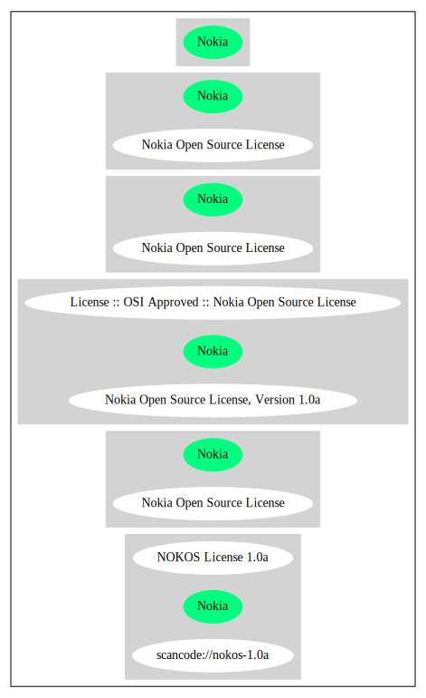

Key |
Value |
|---|---|
Fullname |
Nokia Open Source License |
Shortname |
Nokia |
Rating |
Unknown, probably Attention or Stop or No-Go |
Classification |
WeakCopyleft |
Other Names:
scancode://nokos-1.0a
NOKOS License 1.0a
Nokia Open Source License, Version 1.0a
License :: OSI Approved :: Nokia Open Source License
↑“Is OSI Approved” (source: SPDX)
“Per SPDX.org, this license is OSI certified.” (source: Scancode)
Homepage: http://www.opensource.org/licenses/nokia.html
OSI Page: https://opensource.org/licenses/Nokia
SPDX: http://spdx.org/licenses/Nokia.json
http://www.opensource.org/licenses/nokia
Nokia Open Source License (NOKOS License) Version 1.0a
1. DEFINITIONS.
"Affiliates" of a party shall mean an entity
a) which is directly or indirectly controlling such party;
b) which is under the same direct or indirect ownership or control as such party; or
c) which is directly or indirectly owned or controlled by such party.
For these purposes, an entity shall be treated as being controlled by another if that
other entity has fifty percent (50%) or more of the votes in such entity, is able to
direct its affairs and/or to control the composition of its board of directors or
equivalent body.
"Commercial Use" shall mean distribution or otherwise making the Covered Software
available to a third party.
''Contributor'' shall mean each entity that creates or contributes to the creation of
Modifications.
''Contributor Version'' shall mean in case of any Contributor the combination of the
Original Software, prior Modifications used by a Contributor, and the Modifications
made by that particular Contributor and in case of Nokia in addition the Original
Software in any form, including the form as Exceutable.
''Covered Software'' shall mean the Original Software or Modifications or the
combination of the Original Software and Modifications, in each case including
portions thereof.
''Electronic Distribution Mechanism'' shall mean a mechanism generally accepted in
the software development community for the electronic transfer of data.
''Executable'' shall mean Covered Software in any form other than Source Code.
''Nokia'' shall mean Nokia Corporation and its Affiliates.
''Larger Work'' shall mean a work, which combines Covered Software or portions
thereof with code not governed by the terms of this License.
''License'' shall mean this document.
"Licensable" shall mean having the right to grant, to the maximum extent possible,
whether at the time of the initial grant or subsequently acquired, any and all of the
rights conveyed herein.
''Modifications'' shall mean any addition to or deletion from the substance or
structure of either the Original Software or any previous Modifications. When Covered
Software is released as a series of files, a Modification is:
a) Any addition to or deletion from the contents of a file containing Original
Software or previous Modifications.
b) Any new file that contains any part of the Original Software or previous
Modifications.
''Original Software'' shall mean the Source Code of computer software code which is
described in the Source Code notice required by Exhibit A as Original Software, and
which, at the time of its release under this License is not already Covered Software
governed by this License.
"Patent Claims" shall mean any patent claim(s), now owned or hereafter acquired,
including without limitation, method, process, and apparatus claims, in any patent
Licensable by grantor.
''Source Code'' shall mean the preferred form of the Covered Software for making
modifications to it, including all modules it contains, plus any associated interface
definition files, scripts used to control compilation and installation of an
Executable, or source code differential comparisons against either the Original
Software or another well known, available Covered Software of the Contributor's
choice. The Source Code can be in a compressed or archival form, provided the
appropriate decompression or de-archiving software is widely available for no charge.
"You'' (or "Your") shall mean an individual or a legal entity exercising rights
under, and complying with all of the terms of, this License or a future version of
this License issued under Section 6.1. For legal entities, "You'' includes Affiliates
of such entity.
2. SOURCE CODE LICENSE.
2.1 Nokia Grant.
Subject to the terms of this License, Nokia hereby grants You a world-wide, royalty-
free, non-exclusive license, subject to third party intellectual property claims:
a) under copyrights Licensable by Nokia to use, reproduce, modify, display, perform,
sublicense and distribute the Original Software (or portions thereof) with or without
Modifications, and/or as part of a Larger Work;
b) and under Patents Claims necessarily infringed by the making, using or selling of
Original Software, to make, have made, use, practice, sell, and offer for sale,
and/or otherwise dispose of the Original Software (or portions thereof).
c) The licenses granted in this Section 2.1(a) and (b) are effective on the date
Nokia first distributes Original Software under the terms of this License.
d) Notwithstanding Section 2.1(b) above, no patent license is granted: 1) for code
that You delete from the Original Software; 2) separate from the Original Software;
or 3) for infringements caused by: i) the modification of the Original Software or
ii) the combination of the Original Software with other software or devices.
2.2 Contributor Grant.
Subject to the terms of this License and subject to third party intellectual property
claims, each Contributor hereby grants You a world-wide, royalty-free, non-exclusive
license
a) under copyrights Licensable by Contributor, to use, reproduce, modify, display,
perform, sublicense and distribute the Modifications created by such Contributor (or
portions thereof) either on an unmodified basis, with other Modifications, as Covered
Software and/or as part of a Larger Work; and
b) under Patent Claims necessarily infringed by the making, using, or selling of
Modifications made by that Contributor either alone and/or in combination with its
Contributor Version (or portions of such combination), to make, use, sell, offer for
sale, have made, and/or otherwise dispose of: 1) Modifications made by that
Contributor (or portions thereof); and 2) the combination of Modifications made by
that Contributor with its Contributor Version (or portions of such combination).
c) The licenses granted in Sections 2.2(a) and 2.2(b) are effective on the date
Contributor first makes Commercial Use of the Covered Software.
d) Notwithstanding Section 2.2(b) above, no patent license is granted: 1) for any
code that Contributor has deleted from the Contributor Version; 2) separate from the
Contributor Version; 3) for infringements caused by: i) third party modifications of
Contributor Version or ii) the combination of Modifications made by that Contributor
with other software (except as part of the Contributor Version) or other devices; or
4) under Patent Claims infringed by Covered Software in the absence of Modifications
made by that Contributor.
3. DISTRIBUTION OBLIGATIONS.
3.1 Application of License.
The Modifications which You create or to which You contribute are governed by the
terms of this License, including without limitation Section 2.2. The Source Code
version of Covered Software may be distributed only under the terms of this License
or a future version of this License released under Section 6.1, and You must include
a copy of this License with every copy of the Source Code You distribute. You may not
offer or impose any terms on any Source Code version that alters or restricts the
applicable version of this License or the recipients' rights hereunder. However, You
may include an additional document offering the additional rights described in
Section 3.5.
3.2 Availability of Source Code.
Any Modification which You create or to which You contribute must be made available
in Source Code form under the terms of this License either on the same media as an
Executable version or via an accepted Electronic Distribution Mechanism to anyone to
whom you made an Executable version available; and if made available via Electronic
Distribution Mechanism, must remain available for at least twelve (12) months after
the date it initially became available, or at least six (6) months after a subsequent
version of that particular Modification has been made available to such recipients.
You are responsible for ensuring that the Source Code version remains available even
if the Electronic Distribution Mechanism is maintained by a third party.
3.3 Description of Modifications.
You must cause all Covered Software to which You contribute to contain a file
documenting the changes You made to create that Covered Software and the date of any
change. You must include a prominent statement that the Modification is derived,
directly or indirectly, from Original Software provided by Nokia and including the
name of Nokia in (a) the Source Code, and (b) in any notice in an Executable version
or related documentation in which You describe the origin or ownership of the Covered
Software.
3.4 Intellectual Property Matters
(a) Third Party Claims.
If Contributor has knowledge that a license under a third party's intellectual
property rights is required to exercise the rights granted by such Contributor under
Sections 2.1 or 2.2, Contributor must include a text file with the Source Code
distribution titled "LEGAL'' which describes the claim and the party making the claim
in sufficient detail that a recipient will know whom to contact. If Contributor
obtains such knowledge after the Modification is made available as described in
Section 3.2, Contributor shall promptly modify the LEGAL file in all copies
Contributor makes available thereafter and shall take other steps (such as notifying
appropriate mailing lists or newsgroups) reasonably calculated to inform those who
received the Covered Software that new knowledge has been obtained.
(b) Contributor APIs.
If Contributor's Modifications include an application programming interface and
Contributor has knowledge of patent licenses which are reasonably necessary to
implement that API, Contributor must also include this information in the LEGAL file.
(c) Representations.
Contributor represents that, except as disclosed pursuant to Section 3.4(a) above,
Contributor believes that Contributor's Modifications are Contributor's original
creation(s) and/or Contributor has sufficient rights to grant the rights conveyed by
this License.
3.5 Required Notices.
You must duplicate the notice in Exhibit A in each file of the Source Code. If it is
not possible to put such notice in a particular Source Code file due to its
structure, then You must include such notice in a location (such as a relevant
directory) where a user would be likely to look for such a notice. If You created one
or more Modification(s) You may add your name as a Contributor to the notice
described in Exhibit A. You must also duplicate this License in any documentation for
the Source Code where You describe recipients' rights or ownership rights relating to
Covered Software. You may choose to offer, and to charge a fee for, warranty,
support, indemnity or liability obligations to one or more recipients of Covered
Software. However, You may do so only on Your own behalf, and not on behalf of Nokia
or any Contributor. You must make it absolutely clear that any such warranty,
support, indemnity or liability obligation is offered by You alone, and You hereby
agree to indemnify Nokia and every Contributor for any liability incurred by Nokia or
such Contributor as a result of warranty, support, indemnity or liability terms You
offer.
3.6 Distribution of Executable Versions.
You may distribute Covered Software in Executable form only if the requirements of
Section 3.1-3.5 have been met for that Covered Software, and if You include a notice
stating that the Source Code version of the Covered Software is available under the
terms of this License, including a description of how and where You have fulfilled
the obligations of Section 3.2. The notice must be conspicuously included in any
notice in an Executable version, related documentation or collateral in which You
describe recipients' rights relating to the Covered Software. You may distribute the
Executable version of Covered Software or ownership rights under a license of Your
choice, which may contain terms different from this License, provided that You are in
compliance with the terms of this License and that the license for the Executable
version does not attempt to limit or alter the recipient's rights in the Source Code
version from the rights set forth in this License. If You distribute the Executable
version under a different license You must make it absolutely clear that any terms
which differ from this License are offered by You alone, not by Nokia or any
Contributor. You hereby agree to indemnify Nokia and every Contributor for any
liability incurred by Nokia or such Contributor as a result of any such terms You
offer.
3.7 Larger Works.
You may create a Larger Work by combining Covered Software with other software not
governed by the terms of this License and distribute the Larger Work as a single
product. In such a case, You must make sure the requirements of this License are
fulfilled for the Covered Software.
4. INABILITY TO COMPLY DUE TO STATUTE OR REGULATION.
If it is impossible for You to comply with any of the terms of this License with
respect to some or all of the Covered Software due to statute, judicial order, or
regulation then You must: (a) comply with the terms of this License to the maximum
extent possible; and (b) describe the limitations and the code they affect. Such
description must be included in the LEGAL file described in Section 3.4 and must be
included with all distributions of the Source Code.
Except to the extent prohibited by statute or regulation, such description must be
sufficiently detailed for a recipient of ordinary skill to be able to understand it.
5. APPLICATION OF THIS LICENSE.
This License applies to code to which Nokia has attached the notice in Exhibit A and
to related Covered Software.
6. VERSIONS OF THE LICENSE.
6.1 New Versions.
Nokia may publish revised and/or new versions of the License from time to time. Each
version will be given a distinguishing version number.
6.2 Effect of New Versions.
Once Covered Software has been published under a particular version of the License,
You may always continue to use it under the terms of that version. You may also
choose to use such Covered Software under the terms of any subsequent version of the
License published by Nokia. No one other than Nokia has the right to modify the terms
applicable to Covered Software created under this License.
7. DISCLAIMER OF WARRANTY.
COVERED SOFTWARE IS PROVIDED UNDER THIS LICENSE ON AN "AS IS'' BASIS, WITHOUT
WARRANTY OF ANY KIND, EITHER EXPRESSED OR IMPLIED, INCLUDING, WITHOUT LIMITATION,
WARRANTIES THAT THE COVERED SOFTWARE IS FREE OF DEFECTS, MERCHANTABLE, FIT FOR A
PARTICULAR PURPOSE OR NON-INFRINGING. THE ENTIRE RISK AS TO THE QUALITY AND
PERFORMANCE OF THE COVERED SOFTWARE IS WITH YOU. SHOULD ANY COVERED SOFTWARE PROVE
DEFECTIVE IN ANY RESPECT, YOU (NOT NOKIA, ITS LICENSORS OR AFFILIATES OR ANY OTHER
CONTRIBUTOR) ASSUME THE COST OF ANY NECESSARY SERVICING, REPAIR OR CORRECTION. THIS
DISCLAIMER OF WARRANTY CONSTITUTES AN ESSENTIAL PART OF THIS LICENSE. NO USE OF ANY
COVERED SOFTWARE IS AUTHORIZED HEREUNDER EXCEPT UNDER THIS DISCLAIMER.
8. TERMINATION.
8.1 This License and the rights granted hereunder will terminate automatically if You
fail to comply with terms herein and fail to cure such breach within 30 days of
becoming aware of the breach. All sublicenses to the Covered Software which are
properly granted shall survive any termination of this License. Provisions which, by
their nature, must remain in effect beyond the termination of this License shall
survive.
8.2 If You initiate litigation by asserting a patent infringement claim (excluding
declatory judgment actions) against Nokia or a Contributor (Nokia or Contributor
against whom You file such action is referred to as "Participant") alleging that:
a) such Participant's Contributor Version directly or indirectly infringes any
patent, then any and all rights granted by such Participant to You under Sections 2.1
and/or 2.2 of this License shall, upon 60 days notice from Participant terminate
prospectively, unless if within 60 days after receipt of notice You either: (i) agree
in writing to pay Participant a mutually agreeable reasonable royalty for Your past
and future use of Modifications made by such Participant, or (ii) withdraw Your
litigation claim with respect to the Contributor Version against such Participant. If
within 60 days of notice, a reasonable royalty and payment arrangement are not
mutually agreed upon in writing by the parties or the litigation claim is not
withdrawn, the rights granted by Participant to You under Sections 2.1 and/or 2.2
automatically terminate at the expiration of the 60 day notice period specified
above.
b) any software, hardware, or device, other than such Participant's Contributor
Version, directly or indirectly infringes any patent, then any rights granted to You
by such Participant under Sections 2.1(b) and 2.2(b) are revoked effective as of the
date You first made, used, sold, distributed, or had made, Modifications made by that
Participant.
8.3 If You assert a patent infringement claim against Participant alleging that such
Participant's Contributor Version directly or indirectly infringes any patent where
such claim is resolved (such as by license or settlement) prior to the initiation of
patent infringement litigation, then the reasonable value of the licenses granted by
such Participant under Sections 2.1 or 2.2 shall be taken into account in determining
the amount or value of any payment or license.
8.4 In the event of termination under Sections 8.1 or 8.2 above, all end user license
agreements (excluding distributors and resellers) which have been validly granted by
You or any distributor hereunder prior to termination shall survive termination.
9. LIMITATION OF LIABILITY.
UNDER NO CIRCUMSTANCES AND UNDER NO LEGAL THEORY, WHETHER TORT (INCLUDING
NEGLIGENCE), CONTRACT, OR OTHERWISE, SHALL YOU, NOKIA, ANY OTHER CONTRIBUTOR, OR ANY
DISTRIBUTOR OF COVERED SOFTWARE, OR ANY SUPPLIER OF ANY OF SUCH PARTIES, BE LIABLE TO
ANY PERSON FOR ANY INDIRECT, SPECIAL, INCIDENTAL, OR CONSEQUENTIAL DAMAGES OF ANY
CHARACTER INCLUDING, WITHOUT LIMITATION, DAMAGES FOR LOSS OF GOODWILL, WORK STOPPAGE,
COMPUTER FAILURE OR MALFUNCTION, OR ANY AND ALL OTHER COMMERCIAL DAMAGES OR LOSSES,
EVEN IF SUCH PARTY SHALL HAVE BEEN INFORMED OF THE POSSIBILITY OF SUCH DAMAGES. THIS
LIMITATION OF LIABILITY SHALL NOT APPLY TO LIABILITY FOR DEATH OR PERSONAL INJURY
RESULTING FROM SUCH PARTY'S NEGLIGENCE TO THE EXTENT APPLICABLE LAW PROHIBITS SUCH
LIMITATION. SOME JURISDICTIONS DO NOT ALLOW THE EXCLUSION OR LIMITATION OF INCIDENTAL
OR CONSEQUENTIAL DAMAGES, BUT MAY ALLOW LIABILITY TO BE LIMITED; IN SUCH CASES, A
PARTY's, ITS EMPLOYEES, LICENSORS OR AFFILIATES' LIABILITY SHALL BE LIMITED TO U.S.
$50. Nothing contained in this License shall prejudice the statutory rights of any
party dealing as a consumer.
10. MISCELLANEOUS.
This License represents the complete agreement concerning subject matter hereof. All
rights in the Covered Software not expressly granted under this License are reserved.
Nothing in this License shall grant You any rights to use any of the trademarks of
Nokia or any of its Affiliates, even if any of such trademarks are included in any
part of Covered Software and/or documentation to it.
This License is governed by the laws of Finland excluding its conflict-of-law
provisions. All disputes arising from or relating to this Agreement shall be settled
by a single arbitrator appointed by the Central Chamber of Commerce of Finland. The
arbitration procedure shall take place in Helsinki, Finland in the English language.
If any part of this Agreement is found void and unenforceable, it will not affect the
validity of the balance of the Agreement, which shall remain valid and enforceable
according to its terms.
11. RESPONSIBILITY FOR CLAIMS.
As between Nokia and the Contributors, each party is responsible for claims and
damages arising, directly or indirectly, out of its utilization of rights under this
License and You agree to work with Nokia and Contributors to distribute such
responsibility on an equitable basis. Nothing herein is intended or shall be deemed
to constitute any admission of liability.
EXHIBIT A
The contents of this file are subject to the NOKOS License Version 1.0 (the
"License"); you may not use this file except in compliance with the License.
Software distributed under the License is distributed on an "AS IS" basis, WITHOUT
WARRANTY OF ANY KIND, either express or implied. See the License for the specific
language governing rights and limitations under the License.
The Original Software is
.
Copyright © <year> Nokia and others. All Rights Reserved.{
"__impliedNames": [
"Nokia",
"Nokia Open Source License",
"scancode://nokos-1.0a",
"NOKOS License 1.0a",
"Nokia Open Source License, Version 1.0a",
"License :: OSI Approved :: Nokia Open Source License"
],
"__impliedId": "Nokia",
"__impliedComments": [
[
"Scancode",
[
"Per SPDX.org, this license is OSI certified."
]
]
],
"facts": {
"Open Knowledge International": {
"is_generic": null,
"legacy_ids": "",
"status": "active",
"domain_software": true,
"url": "https://opensource.org/licenses/Nokia",
"maintainer": "",
"od_conformance": "not reviewed",
"_sourceURL": "https://github.com/okfn/licenses/blob/master/licenses.csv",
"domain_data": false,
"osd_conformance": "approved",
"id": "Nokia",
"title": "Nokia Open Source License",
"_implications": {
"__impliedNames": [
"Nokia",
"Nokia Open Source License"
],
"__impliedId": "Nokia",
"__impliedURLs": [
[
null,
"https://opensource.org/licenses/Nokia"
]
]
},
"domain_content": false
},
"SPDX": {
"isSPDXLicenseDeprecated": false,
"spdxFullName": "Nokia Open Source License",
"spdxDetailsURL": "http://spdx.org/licenses/Nokia.json",
"_sourceURL": "https://spdx.org/licenses/Nokia.html",
"spdxLicIsOSIApproved": true,
"spdxSeeAlso": [
"https://opensource.org/licenses/nokia"
],
"_implications": {
"__impliedNames": [
"Nokia",
"Nokia Open Source License"
],
"__impliedId": "Nokia",
"__impliedJudgement": [
[
"SPDX",
{
"tag": "PositiveJudgement",
"contents": "Is OSI Approved"
}
]
],
"__isOsiApproved": true,
"__impliedURLs": [
[
"SPDX",
"http://spdx.org/licenses/Nokia.json"
],
[
null,
"https://opensource.org/licenses/nokia"
]
]
},
"spdxLicenseId": "Nokia"
},
"Scancode": {
"otherUrls": [
"http://www.opensource.org/licenses/nokia",
"https://opensource.org/licenses/nokia"
],
"homepageUrl": "http://www.opensource.org/licenses/nokia.html",
"shortName": "NOKOS License 1.0a",
"textUrls": null,
"text": "Nokia Open Source License (NOKOS License) Version 1.0a\n\n 1. DEFINITIONS.\n\n\"Affiliates\" of a party shall mean an entity\n\na) which is directly or indirectly controlling such party;\n\nb) which is under the same direct or indirect ownership or control as such party; or\n\nc) which is directly or indirectly owned or controlled by such party.\n\nFor these purposes, an entity shall be treated as being controlled by another if that\nother entity has fifty percent (50%) or more of the votes in such entity, is able to\ndirect its affairs and/or to control the composition of its board of directors or\nequivalent body.\n\n\"Commercial Use\" shall mean distribution or otherwise making the Covered Software\navailable to a third party.\n\n''Contributor'' shall mean each entity that creates or contributes to the creation of\nModifications.\n\n''Contributor Version'' shall mean in case of any Contributor the combination of the\nOriginal Software, prior Modifications used by a Contributor, and the Modifications\nmade by that particular Contributor and in case of Nokia in addition the Original\nSoftware in any form, including the form as Exceutable.\n\n''Covered Software'' shall mean the Original Software or Modifications or the\ncombination of the Original Software and Modifications, in each case including\nportions thereof.\n\n''Electronic Distribution Mechanism'' shall mean a mechanism generally accepted in\nthe software development community for the electronic transfer of data.\n\n''Executable'' shall mean Covered Software in any form other than Source Code.\n\n''Nokia'' shall mean Nokia Corporation and its Affiliates.\n\n''Larger Work'' shall mean a work, which combines Covered Software or portions\nthereof with code not governed by the terms of this License.\n\n''License'' shall mean this document.\n\n\"Licensable\" shall mean having the right to grant, to the maximum extent possible,\nwhether at the time of the initial grant or subsequently acquired, any and all of the\nrights conveyed herein.\n\n''Modifications'' shall mean any addition to or deletion from the substance or\nstructure of either the Original Software or any previous Modifications. When Covered\nSoftware is released as a series of files, a Modification is:\n\na) Any addition to or deletion from the contents of a file containing Original\nSoftware or previous Modifications.\n\nb) Any new file that contains any part of the Original Software or previous\nModifications.\n\n''Original Software'' shall mean the Source Code of computer software code which is\ndescribed in the Source Code notice required by Exhibit A as Original Software, and\nwhich, at the time of its release under this License is not already Covered Software\ngoverned by this License.\n\n\"Patent Claims\" shall mean any patent claim(s), now owned or hereafter acquired,\nincluding without limitation, method, process, and apparatus claims, in any patent\nLicensable by grantor.\n\n''Source Code'' shall mean the preferred form of the Covered Software for making\nmodifications to it, including all modules it contains, plus any associated interface\ndefinition files, scripts used to control compilation and installation of an\nExecutable, or source code differential comparisons against either the Original\nSoftware or another well known, available Covered Software of the Contributor's\nchoice. The Source Code can be in a compressed or archival form, provided the\nappropriate decompression or de-archiving software is widely available for no charge.\n\n\"You'' (or \"Your\") shall mean an individual or a legal entity exercising rights\nunder, and complying with all of the terms of, this License or a future version of\nthis License issued under Section 6.1. For legal entities, \"You'' includes Affiliates\nof such entity.\n\n2. SOURCE CODE LICENSE.\n\n2.1 Nokia Grant.\n\nSubject to the terms of this License, Nokia hereby grants You a world-wide, royalty-\nfree, non-exclusive license, subject to third party intellectual property claims:\n\na) under copyrights Licensable by Nokia to use, reproduce, modify, display, perform,\nsublicense and distribute the Original Software (or portions thereof) with or without\nModifications, and/or as part of a Larger Work;\n\nb) and under Patents Claims necessarily infringed by the making, using or selling of\nOriginal Software, to make, have made, use, practice, sell, and offer for sale,\nand/or otherwise dispose of the Original Software (or portions thereof).\n\nc) The licenses granted in this Section 2.1(a) and (b) are effective on the date\nNokia first distributes Original Software under the terms of this License.\n\nd) Notwithstanding Section 2.1(b) above, no patent license is granted: 1) for code\nthat You delete from the Original Software; 2) separate from the Original Software;\nor 3) for infringements caused by: i) the modification of the Original Software or\nii) the combination of the Original Software with other software or devices.\n\n2.2 Contributor Grant.\n\nSubject to the terms of this License and subject to third party intellectual property\nclaims, each Contributor hereby grants You a world-wide, royalty-free, non-exclusive\nlicense\n\na) under copyrights Licensable by Contributor, to use, reproduce, modify, display,\nperform, sublicense and distribute the Modifications created by such Contributor (or\nportions thereof) either on an unmodified basis, with other Modifications, as Covered\nSoftware and/or as part of a Larger Work; and\n\nb) under Patent Claims necessarily infringed by the making, using, or selling of\nModifications made by that Contributor either alone and/or in combination with its\nContributor Version (or portions of such combination), to make, use, sell, offer for\nsale, have made, and/or otherwise dispose of: 1) Modifications made by that\nContributor (or portions thereof); and 2) the combination of Modifications made by\nthat Contributor with its Contributor Version (or portions of such combination).\n\nc) The licenses granted in Sections 2.2(a) and 2.2(b) are effective on the date\nContributor first makes Commercial Use of the Covered Software.\n\nd) Notwithstanding Section 2.2(b) above, no patent license is granted: 1) for any\ncode that Contributor has deleted from the Contributor Version; 2) separate from the\nContributor Version; 3) for infringements caused by: i) third party modifications of\nContributor Version or ii) the combination of Modifications made by that Contributor\nwith other software (except as part of the Contributor Version) or other devices; or\n4) under Patent Claims infringed by Covered Software in the absence of Modifications\nmade by that Contributor.\n\n3. DISTRIBUTION OBLIGATIONS.\n\n3.1 Application of License.\n\n\nThe Modifications which You create or to which You contribute are governed by the\nterms of this License, including without limitation Section 2.2. The Source Code\nversion of Covered Software may be distributed only under the terms of this License\nor a future version of this License released under Section 6.1, and You must include\na copy of this License with every copy of the Source Code You distribute. You may not\noffer or impose any terms on any Source Code version that alters or restricts the\napplicable version of this License or the recipients' rights hereunder. However, You\nmay include an additional document offering the additional rights described in\nSection 3.5.\n\n3.2 Availability of Source Code.\n\nAny Modification which You create or to which You contribute must be made available\nin Source Code form under the terms of this License either on the same media as an\nExecutable version or via an accepted Electronic Distribution Mechanism to anyone to\nwhom you made an Executable version available; and if made available via Electronic\nDistribution Mechanism, must remain available for at least twelve (12) months after\nthe date it initially became available, or at least six (6) months after a subsequent\nversion of that particular Modification has been made available to such recipients.\nYou are responsible for ensuring that the Source Code version remains available even\nif the Electronic Distribution Mechanism is maintained by a third party.\n\n3.3 Description of Modifications.\n\nYou must cause all Covered Software to which You contribute to contain a file\ndocumenting the changes You made to create that Covered Software and the date of any\nchange. You must include a prominent statement that the Modification is derived,\ndirectly or indirectly, from Original Software provided by Nokia and including the\nname of Nokia in (a) the Source Code, and (b) in any notice in an Executable version\nor related documentation in which You describe the origin or ownership of the Covered\nSoftware.\n\n3.4 Intellectual Property Matters\n\n(a) Third Party Claims.\n\nIf Contributor has knowledge that a license under a third party's intellectual\nproperty rights is required to exercise the rights granted by such Contributor under\nSections 2.1 or 2.2, Contributor must include a text file with the Source Code\ndistribution titled \"LEGAL'' which describes the claim and the party making the claim\nin sufficient detail that a recipient will know whom to contact. If Contributor\nobtains such knowledge after the Modification is made available as described in\nSection 3.2, Contributor shall promptly modify the LEGAL file in all copies\nContributor makes available thereafter and shall take other steps (such as notifying\nappropriate mailing lists or newsgroups) reasonably calculated to inform those who\nreceived the Covered Software that new knowledge has been obtained.\n\n(b) Contributor APIs.\n\nIf Contributor's Modifications include an application programming interface and\nContributor has knowledge of patent licenses which are reasonably necessary to\nimplement that API, Contributor must also include this information in the LEGAL file.\n\n(c) Representations.\n\nContributor represents that, except as disclosed pursuant to Section 3.4(a) above,\nContributor believes that Contributor's Modifications are Contributor's original\ncreation(s) and/or Contributor has sufficient rights to grant the rights conveyed by\nthis License.\n\n3.5 Required Notices.\n\nYou must duplicate the notice in Exhibit A in each file of the Source Code. If it is\nnot possible to put such notice in a particular Source Code file due to its\nstructure, then You must include such notice in a location (such as a relevant\ndirectory) where a user would be likely to look for such a notice. If You created one\nor more Modification(s) You may add your name as a Contributor to the notice\ndescribed in Exhibit A. You must also duplicate this License in any documentation for\nthe Source Code where You describe recipients' rights or ownership rights relating to\nCovered Software. You may choose to offer, and to charge a fee for, warranty,\nsupport, indemnity or liability obligations to one or more recipients of Covered\nSoftware. However, You may do so only on Your own behalf, and not on behalf of Nokia\nor any Contributor. You must make it absolutely clear that any such warranty,\nsupport, indemnity or liability obligation is offered by You alone, and You hereby\nagree to indemnify Nokia and every Contributor for any liability incurred by Nokia or\nsuch Contributor as a result of warranty, support, indemnity or liability terms You\noffer.\n\n3.6 Distribution of Executable Versions.\n\nYou may distribute Covered Software in Executable form only if the requirements of\nSection 3.1-3.5 have been met for that Covered Software, and if You include a notice\nstating that the Source Code version of the Covered Software is available under the\nterms of this License, including a description of how and where You have fulfilled\nthe obligations of Section 3.2. The notice must be conspicuously included in any\nnotice in an Executable version, related documentation or collateral in which You\ndescribe recipients' rights relating to the Covered Software. You may distribute the\nExecutable version of Covered Software or ownership rights under a license of Your\nchoice, which may contain terms different from this License, provided that You are in\ncompliance with the terms of this License and that the license for the Executable\nversion does not attempt to limit or alter the recipient's rights in the Source Code\nversion from the rights set forth in this License. If You distribute the Executable\nversion under a different license You must make it absolutely clear that any terms\nwhich differ from this License are offered by You alone, not by Nokia or any\nContributor. You hereby agree to indemnify Nokia and every Contributor for any\nliability incurred by Nokia or such Contributor as a result of any such terms You\noffer.\n\n3.7 Larger Works.\n\nYou may create a Larger Work by combining Covered Software with other software not\ngoverned by the terms of this License and distribute the Larger Work as a single\nproduct. In such a case, You must make sure the requirements of this License are\nfulfilled for the Covered Software.\n\n4. INABILITY TO COMPLY DUE TO STATUTE OR REGULATION.\n\nIf it is impossible for You to comply with any of the terms of this License with\nrespect to some or all of the Covered Software due to statute, judicial order, or\nregulation then You must: (a) comply with the terms of this License to the maximum\nextent possible; and (b) describe the limitations and the code they affect. Such\ndescription must be included in the LEGAL file described in Section 3.4 and must be\nincluded with all distributions of the Source Code.\n\nExcept to the extent prohibited by statute or regulation, such description must be\nsufficiently detailed for a recipient of ordinary skill to be able to understand it.\n\n5. APPLICATION OF THIS LICENSE.\n\nThis License applies to code to which Nokia has attached the notice in Exhibit A and\nto related Covered Software.\n\n6. VERSIONS OF THE LICENSE.\n\n\n6.1 New Versions.\n\nNokia may publish revised and/or new versions of the License from time to time. Each\nversion will be given a distinguishing version number.\n\n6.2 Effect of New Versions.\n\nOnce Covered Software has been published under a particular version of the License,\nYou may always continue to use it under the terms of that version. You may also\nchoose to use such Covered Software under the terms of any subsequent version of the\nLicense published by Nokia. No one other than Nokia has the right to modify the terms\napplicable to Covered Software created under this License.\n\n7. DISCLAIMER OF WARRANTY.\n\nCOVERED SOFTWARE IS PROVIDED UNDER THIS LICENSE ON AN \"AS IS'' BASIS, WITHOUT\nWARRANTY OF ANY KIND, EITHER EXPRESSED OR IMPLIED, INCLUDING, WITHOUT LIMITATION,\nWARRANTIES THAT THE COVERED SOFTWARE IS FREE OF DEFECTS, MERCHANTABLE, FIT FOR A\nPARTICULAR PURPOSE OR NON-INFRINGING. THE ENTIRE RISK AS TO THE QUALITY AND\nPERFORMANCE OF THE COVERED SOFTWARE IS WITH YOU. SHOULD ANY COVERED SOFTWARE PROVE\nDEFECTIVE IN ANY RESPECT, YOU (NOT NOKIA, ITS LICENSORS OR AFFILIATES OR ANY OTHER\nCONTRIBUTOR) ASSUME THE COST OF ANY NECESSARY SERVICING, REPAIR OR CORRECTION. THIS\nDISCLAIMER OF WARRANTY CONSTITUTES AN ESSENTIAL PART OF THIS LICENSE. NO USE OF ANY\nCOVERED SOFTWARE IS AUTHORIZED HEREUNDER EXCEPT UNDER THIS DISCLAIMER.\n\n8. TERMINATION.\n\n8.1 This License and the rights granted hereunder will terminate automatically if You\nfail to comply with terms herein and fail to cure such breach within 30 days of\nbecoming aware of the breach. All sublicenses to the Covered Software which are\nproperly granted shall survive any termination of this License. Provisions which, by\ntheir nature, must remain in effect beyond the termination of this License shall\nsurvive.\n\n8.2 If You initiate litigation by asserting a patent infringement claim (excluding\ndeclatory judgment actions) against Nokia or a Contributor (Nokia or Contributor\nagainst whom You file such action is referred to as \"Participant\") alleging that:\n\na) such Participant's Contributor Version directly or indirectly infringes any\npatent, then any and all rights granted by such Participant to You under Sections 2.1\nand/or 2.2 of this License shall, upon 60 days notice from Participant terminate\nprospectively, unless if within 60 days after receipt of notice You either: (i) agree\nin writing to pay Participant a mutually agreeable reasonable royalty for Your past\nand future use of Modifications made by such Participant, or (ii) withdraw Your\nlitigation claim with respect to the Contributor Version against such Participant. If\nwithin 60 days of notice, a reasonable royalty and payment arrangement are not\nmutually agreed upon in writing by the parties or the litigation claim is not\nwithdrawn, the rights granted by Participant to You under Sections 2.1 and/or 2.2\nautomatically terminate at the expiration of the 60 day notice period specified\nabove.\n\nb) any software, hardware, or device, other than such Participant's Contributor\nVersion, directly or indirectly infringes any patent, then any rights granted to You\nby such Participant under Sections 2.1(b) and 2.2(b) are revoked effective as of the\ndate You first made, used, sold, distributed, or had made, Modifications made by that\nParticipant.\n\n8.3 If You assert a patent infringement claim against Participant alleging that such\nParticipant's Contributor Version directly or indirectly infringes any patent where\nsuch claim is resolved (such as by license or settlement) prior to the initiation of\npatent infringement litigation, then the reasonable value of the licenses granted by\nsuch Participant under Sections 2.1 or 2.2 shall be taken into account in determining\nthe amount or value of any payment or license.\n\n8.4 In the event of termination under Sections 8.1 or 8.2 above, all end user license\nagreements (excluding distributors and resellers) which have been validly granted by\nYou or any distributor hereunder prior to termination shall survive termination.\n\n9. LIMITATION OF LIABILITY.\n\nUNDER NO CIRCUMSTANCES AND UNDER NO LEGAL THEORY, WHETHER TORT (INCLUDING\nNEGLIGENCE), CONTRACT, OR OTHERWISE, SHALL YOU, NOKIA, ANY OTHER CONTRIBUTOR, OR ANY\nDISTRIBUTOR OF COVERED SOFTWARE, OR ANY SUPPLIER OF ANY OF SUCH PARTIES, BE LIABLE TO\nANY PERSON FOR ANY INDIRECT, SPECIAL, INCIDENTAL, OR CONSEQUENTIAL DAMAGES OF ANY\nCHARACTER INCLUDING, WITHOUT LIMITATION, DAMAGES FOR LOSS OF GOODWILL, WORK STOPPAGE,\nCOMPUTER FAILURE OR MALFUNCTION, OR ANY AND ALL OTHER COMMERCIAL DAMAGES OR LOSSES,\nEVEN IF SUCH PARTY SHALL HAVE BEEN INFORMED OF THE POSSIBILITY OF SUCH DAMAGES. THIS\nLIMITATION OF LIABILITY SHALL NOT APPLY TO LIABILITY FOR DEATH OR PERSONAL INJURY\nRESULTING FROM SUCH PARTY'S NEGLIGENCE TO THE EXTENT APPLICABLE LAW PROHIBITS SUCH\nLIMITATION. SOME JURISDICTIONS DO NOT ALLOW THE EXCLUSION OR LIMITATION OF INCIDENTAL\nOR CONSEQUENTIAL DAMAGES, BUT MAY ALLOW LIABILITY TO BE LIMITED; IN SUCH CASES, A\nPARTY's, ITS EMPLOYEES, LICENSORS OR AFFILIATES' LIABILITY SHALL BE LIMITED TO U.S.\n$50. Nothing contained in this License shall prejudice the statutory rights of any\nparty dealing as a consumer.\n\n10. MISCELLANEOUS.\n\nThis License represents the complete agreement concerning subject matter hereof. All\nrights in the Covered Software not expressly granted under this License are reserved.\nNothing in this License shall grant You any rights to use any of the trademarks of\nNokia or any of its Affiliates, even if any of such trademarks are included in any\npart of Covered Software and/or documentation to it.\n\nThis License is governed by the laws of Finland excluding its conflict-of-law\nprovisions. All disputes arising from or relating to this Agreement shall be settled\nby a single arbitrator appointed by the Central Chamber of Commerce of Finland. The\narbitration procedure shall take place in Helsinki, Finland in the English language.\nIf any part of this Agreement is found void and unenforceable, it will not affect the\nvalidity of the balance of the Agreement, which shall remain valid and enforceable\naccording to its terms.\n\n11. RESPONSIBILITY FOR CLAIMS.\n\nAs between Nokia and the Contributors, each party is responsible for claims and\ndamages arising, directly or indirectly, out of its utilization of rights under this\nLicense and You agree to work with Nokia and Contributors to distribute such\nresponsibility on an equitable basis. Nothing herein is intended or shall be deemed\nto constitute any admission of liability.\n\n \n\nEXHIBIT A\n\nThe contents of this file are subject to the NOKOS License Version 1.0 (the\n\"License\"); you may not use this file except in compliance with the License.\n\nSoftware distributed under the License is distributed on an \"AS IS\" basis, WITHOUT\nWARRANTY OF ANY KIND, either express or implied. See the License for the specific\nlanguage governing rights and limitations under the License.\n\nThe Original Software is\n .\n\nCopyright é <year> Nokia and others. All Rights Reserved.",
"category": "Copyleft Limited",
"osiUrl": "http://www.opensource.org/licenses/nokia.html",
"owner": "Nokia",
"_sourceURL": "https://github.com/nexB/scancode-toolkit/blob/develop/src/licensedcode/data/licenses/nokos-1.0a.yml",
"key": "nokos-1.0a",
"name": "Nokia Open Source License 1.0a",
"spdxId": "Nokia",
"notes": "Per SPDX.org, this license is OSI certified.",
"_implications": {
"__impliedNames": [
"scancode://nokos-1.0a",
"NOKOS License 1.0a",
"Nokia"
],
"__impliedId": "Nokia",
"__impliedComments": [
[
"Scancode",
[
"Per SPDX.org, this license is OSI certified."
]
]
],
"__impliedCopyleft": [
[
"Scancode",
"WeakCopyleft"
]
],
"__calculatedCopyleft": "WeakCopyleft",
"__impliedText": "Nokia Open Source License (NOKOS License) Version 1.0a\n\n 1. DEFINITIONS.\n\n\"Affiliates\" of a party shall mean an entity\n\na) which is directly or indirectly controlling such party;\n\nb) which is under the same direct or indirect ownership or control as such party; or\n\nc) which is directly or indirectly owned or controlled by such party.\n\nFor these purposes, an entity shall be treated as being controlled by another if that\nother entity has fifty percent (50%) or more of the votes in such entity, is able to\ndirect its affairs and/or to control the composition of its board of directors or\nequivalent body.\n\n\"Commercial Use\" shall mean distribution or otherwise making the Covered Software\navailable to a third party.\n\n''Contributor'' shall mean each entity that creates or contributes to the creation of\nModifications.\n\n''Contributor Version'' shall mean in case of any Contributor the combination of the\nOriginal Software, prior Modifications used by a Contributor, and the Modifications\nmade by that particular Contributor and in case of Nokia in addition the Original\nSoftware in any form, including the form as Exceutable.\n\n''Covered Software'' shall mean the Original Software or Modifications or the\ncombination of the Original Software and Modifications, in each case including\nportions thereof.\n\n''Electronic Distribution Mechanism'' shall mean a mechanism generally accepted in\nthe software development community for the electronic transfer of data.\n\n''Executable'' shall mean Covered Software in any form other than Source Code.\n\n''Nokia'' shall mean Nokia Corporation and its Affiliates.\n\n''Larger Work'' shall mean a work, which combines Covered Software or portions\nthereof with code not governed by the terms of this License.\n\n''License'' shall mean this document.\n\n\"Licensable\" shall mean having the right to grant, to the maximum extent possible,\nwhether at the time of the initial grant or subsequently acquired, any and all of the\nrights conveyed herein.\n\n''Modifications'' shall mean any addition to or deletion from the substance or\nstructure of either the Original Software or any previous Modifications. When Covered\nSoftware is released as a series of files, a Modification is:\n\na) Any addition to or deletion from the contents of a file containing Original\nSoftware or previous Modifications.\n\nb) Any new file that contains any part of the Original Software or previous\nModifications.\n\n''Original Software'' shall mean the Source Code of computer software code which is\ndescribed in the Source Code notice required by Exhibit A as Original Software, and\nwhich, at the time of its release under this License is not already Covered Software\ngoverned by this License.\n\n\"Patent Claims\" shall mean any patent claim(s), now owned or hereafter acquired,\nincluding without limitation, method, process, and apparatus claims, in any patent\nLicensable by grantor.\n\n''Source Code'' shall mean the preferred form of the Covered Software for making\nmodifications to it, including all modules it contains, plus any associated interface\ndefinition files, scripts used to control compilation and installation of an\nExecutable, or source code differential comparisons against either the Original\nSoftware or another well known, available Covered Software of the Contributor's\nchoice. The Source Code can be in a compressed or archival form, provided the\nappropriate decompression or de-archiving software is widely available for no charge.\n\n\"You'' (or \"Your\") shall mean an individual or a legal entity exercising rights\nunder, and complying with all of the terms of, this License or a future version of\nthis License issued under Section 6.1. For legal entities, \"You'' includes Affiliates\nof such entity.\n\n2. SOURCE CODE LICENSE.\n\n2.1 Nokia Grant.\n\nSubject to the terms of this License, Nokia hereby grants You a world-wide, royalty-\nfree, non-exclusive license, subject to third party intellectual property claims:\n\na) under copyrights Licensable by Nokia to use, reproduce, modify, display, perform,\nsublicense and distribute the Original Software (or portions thereof) with or without\nModifications, and/or as part of a Larger Work;\n\nb) and under Patents Claims necessarily infringed by the making, using or selling of\nOriginal Software, to make, have made, use, practice, sell, and offer for sale,\nand/or otherwise dispose of the Original Software (or portions thereof).\n\nc) The licenses granted in this Section 2.1(a) and (b) are effective on the date\nNokia first distributes Original Software under the terms of this License.\n\nd) Notwithstanding Section 2.1(b) above, no patent license is granted: 1) for code\nthat You delete from the Original Software; 2) separate from the Original Software;\nor 3) for infringements caused by: i) the modification of the Original Software or\nii) the combination of the Original Software with other software or devices.\n\n2.2 Contributor Grant.\n\nSubject to the terms of this License and subject to third party intellectual property\nclaims, each Contributor hereby grants You a world-wide, royalty-free, non-exclusive\nlicense\n\na) under copyrights Licensable by Contributor, to use, reproduce, modify, display,\nperform, sublicense and distribute the Modifications created by such Contributor (or\nportions thereof) either on an unmodified basis, with other Modifications, as Covered\nSoftware and/or as part of a Larger Work; and\n\nb) under Patent Claims necessarily infringed by the making, using, or selling of\nModifications made by that Contributor either alone and/or in combination with its\nContributor Version (or portions of such combination), to make, use, sell, offer for\nsale, have made, and/or otherwise dispose of: 1) Modifications made by that\nContributor (or portions thereof); and 2) the combination of Modifications made by\nthat Contributor with its Contributor Version (or portions of such combination).\n\nc) The licenses granted in Sections 2.2(a) and 2.2(b) are effective on the date\nContributor first makes Commercial Use of the Covered Software.\n\nd) Notwithstanding Section 2.2(b) above, no patent license is granted: 1) for any\ncode that Contributor has deleted from the Contributor Version; 2) separate from the\nContributor Version; 3) for infringements caused by: i) third party modifications of\nContributor Version or ii) the combination of Modifications made by that Contributor\nwith other software (except as part of the Contributor Version) or other devices; or\n4) under Patent Claims infringed by Covered Software in the absence of Modifications\nmade by that Contributor.\n\n3. DISTRIBUTION OBLIGATIONS.\n\n3.1 Application of License.\n\n\nThe Modifications which You create or to which You contribute are governed by the\nterms of this License, including without limitation Section 2.2. The Source Code\nversion of Covered Software may be distributed only under the terms of this License\nor a future version of this License released under Section 6.1, and You must include\na copy of this License with every copy of the Source Code You distribute. You may not\noffer or impose any terms on any Source Code version that alters or restricts the\napplicable version of this License or the recipients' rights hereunder. However, You\nmay include an additional document offering the additional rights described in\nSection 3.5.\n\n3.2 Availability of Source Code.\n\nAny Modification which You create or to which You contribute must be made available\nin Source Code form under the terms of this License either on the same media as an\nExecutable version or via an accepted Electronic Distribution Mechanism to anyone to\nwhom you made an Executable version available; and if made available via Electronic\nDistribution Mechanism, must remain available for at least twelve (12) months after\nthe date it initially became available, or at least six (6) months after a subsequent\nversion of that particular Modification has been made available to such recipients.\nYou are responsible for ensuring that the Source Code version remains available even\nif the Electronic Distribution Mechanism is maintained by a third party.\n\n3.3 Description of Modifications.\n\nYou must cause all Covered Software to which You contribute to contain a file\ndocumenting the changes You made to create that Covered Software and the date of any\nchange. You must include a prominent statement that the Modification is derived,\ndirectly or indirectly, from Original Software provided by Nokia and including the\nname of Nokia in (a) the Source Code, and (b) in any notice in an Executable version\nor related documentation in which You describe the origin or ownership of the Covered\nSoftware.\n\n3.4 Intellectual Property Matters\n\n(a) Third Party Claims.\n\nIf Contributor has knowledge that a license under a third party's intellectual\nproperty rights is required to exercise the rights granted by such Contributor under\nSections 2.1 or 2.2, Contributor must include a text file with the Source Code\ndistribution titled \"LEGAL'' which describes the claim and the party making the claim\nin sufficient detail that a recipient will know whom to contact. If Contributor\nobtains such knowledge after the Modification is made available as described in\nSection 3.2, Contributor shall promptly modify the LEGAL file in all copies\nContributor makes available thereafter and shall take other steps (such as notifying\nappropriate mailing lists or newsgroups) reasonably calculated to inform those who\nreceived the Covered Software that new knowledge has been obtained.\n\n(b) Contributor APIs.\n\nIf Contributor's Modifications include an application programming interface and\nContributor has knowledge of patent licenses which are reasonably necessary to\nimplement that API, Contributor must also include this information in the LEGAL file.\n\n(c) Representations.\n\nContributor represents that, except as disclosed pursuant to Section 3.4(a) above,\nContributor believes that Contributor's Modifications are Contributor's original\ncreation(s) and/or Contributor has sufficient rights to grant the rights conveyed by\nthis License.\n\n3.5 Required Notices.\n\nYou must duplicate the notice in Exhibit A in each file of the Source Code. If it is\nnot possible to put such notice in a particular Source Code file due to its\nstructure, then You must include such notice in a location (such as a relevant\ndirectory) where a user would be likely to look for such a notice. If You created one\nor more Modification(s) You may add your name as a Contributor to the notice\ndescribed in Exhibit A. You must also duplicate this License in any documentation for\nthe Source Code where You describe recipients' rights or ownership rights relating to\nCovered Software. You may choose to offer, and to charge a fee for, warranty,\nsupport, indemnity or liability obligations to one or more recipients of Covered\nSoftware. However, You may do so only on Your own behalf, and not on behalf of Nokia\nor any Contributor. You must make it absolutely clear that any such warranty,\nsupport, indemnity or liability obligation is offered by You alone, and You hereby\nagree to indemnify Nokia and every Contributor for any liability incurred by Nokia or\nsuch Contributor as a result of warranty, support, indemnity or liability terms You\noffer.\n\n3.6 Distribution of Executable Versions.\n\nYou may distribute Covered Software in Executable form only if the requirements of\nSection 3.1-3.5 have been met for that Covered Software, and if You include a notice\nstating that the Source Code version of the Covered Software is available under the\nterms of this License, including a description of how and where You have fulfilled\nthe obligations of Section 3.2. The notice must be conspicuously included in any\nnotice in an Executable version, related documentation or collateral in which You\ndescribe recipients' rights relating to the Covered Software. You may distribute the\nExecutable version of Covered Software or ownership rights under a license of Your\nchoice, which may contain terms different from this License, provided that You are in\ncompliance with the terms of this License and that the license for the Executable\nversion does not attempt to limit or alter the recipient's rights in the Source Code\nversion from the rights set forth in this License. If You distribute the Executable\nversion under a different license You must make it absolutely clear that any terms\nwhich differ from this License are offered by You alone, not by Nokia or any\nContributor. You hereby agree to indemnify Nokia and every Contributor for any\nliability incurred by Nokia or such Contributor as a result of any such terms You\noffer.\n\n3.7 Larger Works.\n\nYou may create a Larger Work by combining Covered Software with other software not\ngoverned by the terms of this License and distribute the Larger Work as a single\nproduct. In such a case, You must make sure the requirements of this License are\nfulfilled for the Covered Software.\n\n4. INABILITY TO COMPLY DUE TO STATUTE OR REGULATION.\n\nIf it is impossible for You to comply with any of the terms of this License with\nrespect to some or all of the Covered Software due to statute, judicial order, or\nregulation then You must: (a) comply with the terms of this License to the maximum\nextent possible; and (b) describe the limitations and the code they affect. Such\ndescription must be included in the LEGAL file described in Section 3.4 and must be\nincluded with all distributions of the Source Code.\n\nExcept to the extent prohibited by statute or regulation, such description must be\nsufficiently detailed for a recipient of ordinary skill to be able to understand it.\n\n5. APPLICATION OF THIS LICENSE.\n\nThis License applies to code to which Nokia has attached the notice in Exhibit A and\nto related Covered Software.\n\n6. VERSIONS OF THE LICENSE.\n\n\n6.1 New Versions.\n\nNokia may publish revised and/or new versions of the License from time to time. Each\nversion will be given a distinguishing version number.\n\n6.2 Effect of New Versions.\n\nOnce Covered Software has been published under a particular version of the License,\nYou may always continue to use it under the terms of that version. You may also\nchoose to use such Covered Software under the terms of any subsequent version of the\nLicense published by Nokia. No one other than Nokia has the right to modify the terms\napplicable to Covered Software created under this License.\n\n7. DISCLAIMER OF WARRANTY.\n\nCOVERED SOFTWARE IS PROVIDED UNDER THIS LICENSE ON AN \"AS IS'' BASIS, WITHOUT\nWARRANTY OF ANY KIND, EITHER EXPRESSED OR IMPLIED, INCLUDING, WITHOUT LIMITATION,\nWARRANTIES THAT THE COVERED SOFTWARE IS FREE OF DEFECTS, MERCHANTABLE, FIT FOR A\nPARTICULAR PURPOSE OR NON-INFRINGING. THE ENTIRE RISK AS TO THE QUALITY AND\nPERFORMANCE OF THE COVERED SOFTWARE IS WITH YOU. SHOULD ANY COVERED SOFTWARE PROVE\nDEFECTIVE IN ANY RESPECT, YOU (NOT NOKIA, ITS LICENSORS OR AFFILIATES OR ANY OTHER\nCONTRIBUTOR) ASSUME THE COST OF ANY NECESSARY SERVICING, REPAIR OR CORRECTION. THIS\nDISCLAIMER OF WARRANTY CONSTITUTES AN ESSENTIAL PART OF THIS LICENSE. NO USE OF ANY\nCOVERED SOFTWARE IS AUTHORIZED HEREUNDER EXCEPT UNDER THIS DISCLAIMER.\n\n8. TERMINATION.\n\n8.1 This License and the rights granted hereunder will terminate automatically if You\nfail to comply with terms herein and fail to cure such breach within 30 days of\nbecoming aware of the breach. All sublicenses to the Covered Software which are\nproperly granted shall survive any termination of this License. Provisions which, by\ntheir nature, must remain in effect beyond the termination of this License shall\nsurvive.\n\n8.2 If You initiate litigation by asserting a patent infringement claim (excluding\ndeclatory judgment actions) against Nokia or a Contributor (Nokia or Contributor\nagainst whom You file such action is referred to as \"Participant\") alleging that:\n\na) such Participant's Contributor Version directly or indirectly infringes any\npatent, then any and all rights granted by such Participant to You under Sections 2.1\nand/or 2.2 of this License shall, upon 60 days notice from Participant terminate\nprospectively, unless if within 60 days after receipt of notice You either: (i) agree\nin writing to pay Participant a mutually agreeable reasonable royalty for Your past\nand future use of Modifications made by such Participant, or (ii) withdraw Your\nlitigation claim with respect to the Contributor Version against such Participant. If\nwithin 60 days of notice, a reasonable royalty and payment arrangement are not\nmutually agreed upon in writing by the parties or the litigation claim is not\nwithdrawn, the rights granted by Participant to You under Sections 2.1 and/or 2.2\nautomatically terminate at the expiration of the 60 day notice period specified\nabove.\n\nb) any software, hardware, or device, other than such Participant's Contributor\nVersion, directly or indirectly infringes any patent, then any rights granted to You\nby such Participant under Sections 2.1(b) and 2.2(b) are revoked effective as of the\ndate You first made, used, sold, distributed, or had made, Modifications made by that\nParticipant.\n\n8.3 If You assert a patent infringement claim against Participant alleging that such\nParticipant's Contributor Version directly or indirectly infringes any patent where\nsuch claim is resolved (such as by license or settlement) prior to the initiation of\npatent infringement litigation, then the reasonable value of the licenses granted by\nsuch Participant under Sections 2.1 or 2.2 shall be taken into account in determining\nthe amount or value of any payment or license.\n\n8.4 In the event of termination under Sections 8.1 or 8.2 above, all end user license\nagreements (excluding distributors and resellers) which have been validly granted by\nYou or any distributor hereunder prior to termination shall survive termination.\n\n9. LIMITATION OF LIABILITY.\n\nUNDER NO CIRCUMSTANCES AND UNDER NO LEGAL THEORY, WHETHER TORT (INCLUDING\nNEGLIGENCE), CONTRACT, OR OTHERWISE, SHALL YOU, NOKIA, ANY OTHER CONTRIBUTOR, OR ANY\nDISTRIBUTOR OF COVERED SOFTWARE, OR ANY SUPPLIER OF ANY OF SUCH PARTIES, BE LIABLE TO\nANY PERSON FOR ANY INDIRECT, SPECIAL, INCIDENTAL, OR CONSEQUENTIAL DAMAGES OF ANY\nCHARACTER INCLUDING, WITHOUT LIMITATION, DAMAGES FOR LOSS OF GOODWILL, WORK STOPPAGE,\nCOMPUTER FAILURE OR MALFUNCTION, OR ANY AND ALL OTHER COMMERCIAL DAMAGES OR LOSSES,\nEVEN IF SUCH PARTY SHALL HAVE BEEN INFORMED OF THE POSSIBILITY OF SUCH DAMAGES. THIS\nLIMITATION OF LIABILITY SHALL NOT APPLY TO LIABILITY FOR DEATH OR PERSONAL INJURY\nRESULTING FROM SUCH PARTY'S NEGLIGENCE TO THE EXTENT APPLICABLE LAW PROHIBITS SUCH\nLIMITATION. SOME JURISDICTIONS DO NOT ALLOW THE EXCLUSION OR LIMITATION OF INCIDENTAL\nOR CONSEQUENTIAL DAMAGES, BUT MAY ALLOW LIABILITY TO BE LIMITED; IN SUCH CASES, A\nPARTY's, ITS EMPLOYEES, LICENSORS OR AFFILIATES' LIABILITY SHALL BE LIMITED TO U.S.\n$50. Nothing contained in this License shall prejudice the statutory rights of any\nparty dealing as a consumer.\n\n10. MISCELLANEOUS.\n\nThis License represents the complete agreement concerning subject matter hereof. All\nrights in the Covered Software not expressly granted under this License are reserved.\nNothing in this License shall grant You any rights to use any of the trademarks of\nNokia or any of its Affiliates, even if any of such trademarks are included in any\npart of Covered Software and/or documentation to it.\n\nThis License is governed by the laws of Finland excluding its conflict-of-law\nprovisions. All disputes arising from or relating to this Agreement shall be settled\nby a single arbitrator appointed by the Central Chamber of Commerce of Finland. The\narbitration procedure shall take place in Helsinki, Finland in the English language.\nIf any part of this Agreement is found void and unenforceable, it will not affect the\nvalidity of the balance of the Agreement, which shall remain valid and enforceable\naccording to its terms.\n\n11. RESPONSIBILITY FOR CLAIMS.\n\nAs between Nokia and the Contributors, each party is responsible for claims and\ndamages arising, directly or indirectly, out of its utilization of rights under this\nLicense and You agree to work with Nokia and Contributors to distribute such\nresponsibility on an equitable basis. Nothing herein is intended or shall be deemed\nto constitute any admission of liability.\n\n \n\nEXHIBIT A\n\nThe contents of this file are subject to the NOKOS License Version 1.0 (the\n\"License\"); you may not use this file except in compliance with the License.\n\nSoftware distributed under the License is distributed on an \"AS IS\" basis, WITHOUT\nWARRANTY OF ANY KIND, either express or implied. See the License for the specific\nlanguage governing rights and limitations under the License.\n\nThe Original Software is\n .\n\nCopyright © <year> Nokia and others. All Rights Reserved.",
"__impliedURLs": [
[
"Homepage",
"http://www.opensource.org/licenses/nokia.html"
],
[
"OSI Page",
"http://www.opensource.org/licenses/nokia.html"
],
[
null,
"http://www.opensource.org/licenses/nokia"
],
[
null,
"https://opensource.org/licenses/nokia"
]
]
}
},
"OpenChainPolicyTemplate": {
"isSaaSDeemed": "no",
"licenseType": "copyleft",
"freedomOrDeath": "no",
"typeCopyleft": "weak",
"_sourceURL": "https://github.com/OpenChain-Project/curriculum/raw/ddf1e879341adbd9b297cd67c5d5c16b2076540b/policy-template/Open%20Source%20Policy%20Template%20for%20OpenChain%20Specification%201.2.ods",
"name": "Nokia Open Source License ",
"commercialUse": true,
"spdxId": "Nokia",
"_implications": {
"__impliedNames": [
"Nokia"
]
}
},
"OpenSourceInitiative": {
"text": [
{
"url": "https://opensource.org/licenses/Nokia",
"title": "HTML",
"media_type": "text/html"
}
],
"identifiers": [
{
"identifier": "Nokia",
"scheme": "SPDX"
},
{
"identifier": "License :: OSI Approved :: Nokia Open Source License",
"scheme": "Trove"
}
],
"superseded_by": null,
"_sourceURL": "https://opensource.org/licenses/",
"name": "Nokia Open Source License, Version 1.0a",
"other_names": [],
"keywords": [
"discouraged",
"non-reusable",
"osi-approved"
],
"id": "Nokia",
"links": [
{
"note": "OSI Page",
"url": "https://opensource.org/licenses/Nokia"
}
],
"_implications": {
"__impliedNames": [
"Nokia",
"Nokia Open Source License, Version 1.0a",
"Nokia",
"License :: OSI Approved :: Nokia Open Source License"
],
"__impliedURLs": [
[
"OSI Page",
"https://opensource.org/licenses/Nokia"
]
]
}
}
},
"__impliedJudgement": [
[
"SPDX",
{
"tag": "PositiveJudgement",
"contents": "Is OSI Approved"
}
]
],
"__impliedCopyleft": [
[
"Scancode",
"WeakCopyleft"
]
],
"__calculatedCopyleft": "WeakCopyleft",
"__isOsiApproved": true,
"__impliedText": "Nokia Open Source License (NOKOS License) Version 1.0a\n\n 1. DEFINITIONS.\n\n\"Affiliates\" of a party shall mean an entity\n\na) which is directly or indirectly controlling such party;\n\nb) which is under the same direct or indirect ownership or control as such party; or\n\nc) which is directly or indirectly owned or controlled by such party.\n\nFor these purposes, an entity shall be treated as being controlled by another if that\nother entity has fifty percent (50%) or more of the votes in such entity, is able to\ndirect its affairs and/or to control the composition of its board of directors or\nequivalent body.\n\n\"Commercial Use\" shall mean distribution or otherwise making the Covered Software\navailable to a third party.\n\n''Contributor'' shall mean each entity that creates or contributes to the creation of\nModifications.\n\n''Contributor Version'' shall mean in case of any Contributor the combination of the\nOriginal Software, prior Modifications used by a Contributor, and the Modifications\nmade by that particular Contributor and in case of Nokia in addition the Original\nSoftware in any form, including the form as Exceutable.\n\n''Covered Software'' shall mean the Original Software or Modifications or the\ncombination of the Original Software and Modifications, in each case including\nportions thereof.\n\n''Electronic Distribution Mechanism'' shall mean a mechanism generally accepted in\nthe software development community for the electronic transfer of data.\n\n''Executable'' shall mean Covered Software in any form other than Source Code.\n\n''Nokia'' shall mean Nokia Corporation and its Affiliates.\n\n''Larger Work'' shall mean a work, which combines Covered Software or portions\nthereof with code not governed by the terms of this License.\n\n''License'' shall mean this document.\n\n\"Licensable\" shall mean having the right to grant, to the maximum extent possible,\nwhether at the time of the initial grant or subsequently acquired, any and all of the\nrights conveyed herein.\n\n''Modifications'' shall mean any addition to or deletion from the substance or\nstructure of either the Original Software or any previous Modifications. When Covered\nSoftware is released as a series of files, a Modification is:\n\na) Any addition to or deletion from the contents of a file containing Original\nSoftware or previous Modifications.\n\nb) Any new file that contains any part of the Original Software or previous\nModifications.\n\n''Original Software'' shall mean the Source Code of computer software code which is\ndescribed in the Source Code notice required by Exhibit A as Original Software, and\nwhich, at the time of its release under this License is not already Covered Software\ngoverned by this License.\n\n\"Patent Claims\" shall mean any patent claim(s), now owned or hereafter acquired,\nincluding without limitation, method, process, and apparatus claims, in any patent\nLicensable by grantor.\n\n''Source Code'' shall mean the preferred form of the Covered Software for making\nmodifications to it, including all modules it contains, plus any associated interface\ndefinition files, scripts used to control compilation and installation of an\nExecutable, or source code differential comparisons against either the Original\nSoftware or another well known, available Covered Software of the Contributor's\nchoice. The Source Code can be in a compressed or archival form, provided the\nappropriate decompression or de-archiving software is widely available for no charge.\n\n\"You'' (or \"Your\") shall mean an individual or a legal entity exercising rights\nunder, and complying with all of the terms of, this License or a future version of\nthis License issued under Section 6.1. For legal entities, \"You'' includes Affiliates\nof such entity.\n\n2. SOURCE CODE LICENSE.\n\n2.1 Nokia Grant.\n\nSubject to the terms of this License, Nokia hereby grants You a world-wide, royalty-\nfree, non-exclusive license, subject to third party intellectual property claims:\n\na) under copyrights Licensable by Nokia to use, reproduce, modify, display, perform,\nsublicense and distribute the Original Software (or portions thereof) with or without\nModifications, and/or as part of a Larger Work;\n\nb) and under Patents Claims necessarily infringed by the making, using or selling of\nOriginal Software, to make, have made, use, practice, sell, and offer for sale,\nand/or otherwise dispose of the Original Software (or portions thereof).\n\nc) The licenses granted in this Section 2.1(a) and (b) are effective on the date\nNokia first distributes Original Software under the terms of this License.\n\nd) Notwithstanding Section 2.1(b) above, no patent license is granted: 1) for code\nthat You delete from the Original Software; 2) separate from the Original Software;\nor 3) for infringements caused by: i) the modification of the Original Software or\nii) the combination of the Original Software with other software or devices.\n\n2.2 Contributor Grant.\n\nSubject to the terms of this License and subject to third party intellectual property\nclaims, each Contributor hereby grants You a world-wide, royalty-free, non-exclusive\nlicense\n\na) under copyrights Licensable by Contributor, to use, reproduce, modify, display,\nperform, sublicense and distribute the Modifications created by such Contributor (or\nportions thereof) either on an unmodified basis, with other Modifications, as Covered\nSoftware and/or as part of a Larger Work; and\n\nb) under Patent Claims necessarily infringed by the making, using, or selling of\nModifications made by that Contributor either alone and/or in combination with its\nContributor Version (or portions of such combination), to make, use, sell, offer for\nsale, have made, and/or otherwise dispose of: 1) Modifications made by that\nContributor (or portions thereof); and 2) the combination of Modifications made by\nthat Contributor with its Contributor Version (or portions of such combination).\n\nc) The licenses granted in Sections 2.2(a) and 2.2(b) are effective on the date\nContributor first makes Commercial Use of the Covered Software.\n\nd) Notwithstanding Section 2.2(b) above, no patent license is granted: 1) for any\ncode that Contributor has deleted from the Contributor Version; 2) separate from the\nContributor Version; 3) for infringements caused by: i) third party modifications of\nContributor Version or ii) the combination of Modifications made by that Contributor\nwith other software (except as part of the Contributor Version) or other devices; or\n4) under Patent Claims infringed by Covered Software in the absence of Modifications\nmade by that Contributor.\n\n3. DISTRIBUTION OBLIGATIONS.\n\n3.1 Application of License.\n\n\nThe Modifications which You create or to which You contribute are governed by the\nterms of this License, including without limitation Section 2.2. The Source Code\nversion of Covered Software may be distributed only under the terms of this License\nor a future version of this License released under Section 6.1, and You must include\na copy of this License with every copy of the Source Code You distribute. You may not\noffer or impose any terms on any Source Code version that alters or restricts the\napplicable version of this License or the recipients' rights hereunder. However, You\nmay include an additional document offering the additional rights described in\nSection 3.5.\n\n3.2 Availability of Source Code.\n\nAny Modification which You create or to which You contribute must be made available\nin Source Code form under the terms of this License either on the same media as an\nExecutable version or via an accepted Electronic Distribution Mechanism to anyone to\nwhom you made an Executable version available; and if made available via Electronic\nDistribution Mechanism, must remain available for at least twelve (12) months after\nthe date it initially became available, or at least six (6) months after a subsequent\nversion of that particular Modification has been made available to such recipients.\nYou are responsible for ensuring that the Source Code version remains available even\nif the Electronic Distribution Mechanism is maintained by a third party.\n\n3.3 Description of Modifications.\n\nYou must cause all Covered Software to which You contribute to contain a file\ndocumenting the changes You made to create that Covered Software and the date of any\nchange. You must include a prominent statement that the Modification is derived,\ndirectly or indirectly, from Original Software provided by Nokia and including the\nname of Nokia in (a) the Source Code, and (b) in any notice in an Executable version\nor related documentation in which You describe the origin or ownership of the Covered\nSoftware.\n\n3.4 Intellectual Property Matters\n\n(a) Third Party Claims.\n\nIf Contributor has knowledge that a license under a third party's intellectual\nproperty rights is required to exercise the rights granted by such Contributor under\nSections 2.1 or 2.2, Contributor must include a text file with the Source Code\ndistribution titled \"LEGAL'' which describes the claim and the party making the claim\nin sufficient detail that a recipient will know whom to contact. If Contributor\nobtains such knowledge after the Modification is made available as described in\nSection 3.2, Contributor shall promptly modify the LEGAL file in all copies\nContributor makes available thereafter and shall take other steps (such as notifying\nappropriate mailing lists or newsgroups) reasonably calculated to inform those who\nreceived the Covered Software that new knowledge has been obtained.\n\n(b) Contributor APIs.\n\nIf Contributor's Modifications include an application programming interface and\nContributor has knowledge of patent licenses which are reasonably necessary to\nimplement that API, Contributor must also include this information in the LEGAL file.\n\n(c) Representations.\n\nContributor represents that, except as disclosed pursuant to Section 3.4(a) above,\nContributor believes that Contributor's Modifications are Contributor's original\ncreation(s) and/or Contributor has sufficient rights to grant the rights conveyed by\nthis License.\n\n3.5 Required Notices.\n\nYou must duplicate the notice in Exhibit A in each file of the Source Code. If it is\nnot possible to put such notice in a particular Source Code file due to its\nstructure, then You must include such notice in a location (such as a relevant\ndirectory) where a user would be likely to look for such a notice. If You created one\nor more Modification(s) You may add your name as a Contributor to the notice\ndescribed in Exhibit A. You must also duplicate this License in any documentation for\nthe Source Code where You describe recipients' rights or ownership rights relating to\nCovered Software. You may choose to offer, and to charge a fee for, warranty,\nsupport, indemnity or liability obligations to one or more recipients of Covered\nSoftware. However, You may do so only on Your own behalf, and not on behalf of Nokia\nor any Contributor. You must make it absolutely clear that any such warranty,\nsupport, indemnity or liability obligation is offered by You alone, and You hereby\nagree to indemnify Nokia and every Contributor for any liability incurred by Nokia or\nsuch Contributor as a result of warranty, support, indemnity or liability terms You\noffer.\n\n3.6 Distribution of Executable Versions.\n\nYou may distribute Covered Software in Executable form only if the requirements of\nSection 3.1-3.5 have been met for that Covered Software, and if You include a notice\nstating that the Source Code version of the Covered Software is available under the\nterms of this License, including a description of how and where You have fulfilled\nthe obligations of Section 3.2. The notice must be conspicuously included in any\nnotice in an Executable version, related documentation or collateral in which You\ndescribe recipients' rights relating to the Covered Software. You may distribute the\nExecutable version of Covered Software or ownership rights under a license of Your\nchoice, which may contain terms different from this License, provided that You are in\ncompliance with the terms of this License and that the license for the Executable\nversion does not attempt to limit or alter the recipient's rights in the Source Code\nversion from the rights set forth in this License. If You distribute the Executable\nversion under a different license You must make it absolutely clear that any terms\nwhich differ from this License are offered by You alone, not by Nokia or any\nContributor. You hereby agree to indemnify Nokia and every Contributor for any\nliability incurred by Nokia or such Contributor as a result of any such terms You\noffer.\n\n3.7 Larger Works.\n\nYou may create a Larger Work by combining Covered Software with other software not\ngoverned by the terms of this License and distribute the Larger Work as a single\nproduct. In such a case, You must make sure the requirements of this License are\nfulfilled for the Covered Software.\n\n4. INABILITY TO COMPLY DUE TO STATUTE OR REGULATION.\n\nIf it is impossible for You to comply with any of the terms of this License with\nrespect to some or all of the Covered Software due to statute, judicial order, or\nregulation then You must: (a) comply with the terms of this License to the maximum\nextent possible; and (b) describe the limitations and the code they affect. Such\ndescription must be included in the LEGAL file described in Section 3.4 and must be\nincluded with all distributions of the Source Code.\n\nExcept to the extent prohibited by statute or regulation, such description must be\nsufficiently detailed for a recipient of ordinary skill to be able to understand it.\n\n5. APPLICATION OF THIS LICENSE.\n\nThis License applies to code to which Nokia has attached the notice in Exhibit A and\nto related Covered Software.\n\n6. VERSIONS OF THE LICENSE.\n\n\n6.1 New Versions.\n\nNokia may publish revised and/or new versions of the License from time to time. Each\nversion will be given a distinguishing version number.\n\n6.2 Effect of New Versions.\n\nOnce Covered Software has been published under a particular version of the License,\nYou may always continue to use it under the terms of that version. You may also\nchoose to use such Covered Software under the terms of any subsequent version of the\nLicense published by Nokia. No one other than Nokia has the right to modify the terms\napplicable to Covered Software created under this License.\n\n7. DISCLAIMER OF WARRANTY.\n\nCOVERED SOFTWARE IS PROVIDED UNDER THIS LICENSE ON AN \"AS IS'' BASIS, WITHOUT\nWARRANTY OF ANY KIND, EITHER EXPRESSED OR IMPLIED, INCLUDING, WITHOUT LIMITATION,\nWARRANTIES THAT THE COVERED SOFTWARE IS FREE OF DEFECTS, MERCHANTABLE, FIT FOR A\nPARTICULAR PURPOSE OR NON-INFRINGING. THE ENTIRE RISK AS TO THE QUALITY AND\nPERFORMANCE OF THE COVERED SOFTWARE IS WITH YOU. SHOULD ANY COVERED SOFTWARE PROVE\nDEFECTIVE IN ANY RESPECT, YOU (NOT NOKIA, ITS LICENSORS OR AFFILIATES OR ANY OTHER\nCONTRIBUTOR) ASSUME THE COST OF ANY NECESSARY SERVICING, REPAIR OR CORRECTION. THIS\nDISCLAIMER OF WARRANTY CONSTITUTES AN ESSENTIAL PART OF THIS LICENSE. NO USE OF ANY\nCOVERED SOFTWARE IS AUTHORIZED HEREUNDER EXCEPT UNDER THIS DISCLAIMER.\n\n8. TERMINATION.\n\n8.1 This License and the rights granted hereunder will terminate automatically if You\nfail to comply with terms herein and fail to cure such breach within 30 days of\nbecoming aware of the breach. All sublicenses to the Covered Software which are\nproperly granted shall survive any termination of this License. Provisions which, by\ntheir nature, must remain in effect beyond the termination of this License shall\nsurvive.\n\n8.2 If You initiate litigation by asserting a patent infringement claim (excluding\ndeclatory judgment actions) against Nokia or a Contributor (Nokia or Contributor\nagainst whom You file such action is referred to as \"Participant\") alleging that:\n\na) such Participant's Contributor Version directly or indirectly infringes any\npatent, then any and all rights granted by such Participant to You under Sections 2.1\nand/or 2.2 of this License shall, upon 60 days notice from Participant terminate\nprospectively, unless if within 60 days after receipt of notice You either: (i) agree\nin writing to pay Participant a mutually agreeable reasonable royalty for Your past\nand future use of Modifications made by such Participant, or (ii) withdraw Your\nlitigation claim with respect to the Contributor Version against such Participant. If\nwithin 60 days of notice, a reasonable royalty and payment arrangement are not\nmutually agreed upon in writing by the parties or the litigation claim is not\nwithdrawn, the rights granted by Participant to You under Sections 2.1 and/or 2.2\nautomatically terminate at the expiration of the 60 day notice period specified\nabove.\n\nb) any software, hardware, or device, other than such Participant's Contributor\nVersion, directly or indirectly infringes any patent, then any rights granted to You\nby such Participant under Sections 2.1(b) and 2.2(b) are revoked effective as of the\ndate You first made, used, sold, distributed, or had made, Modifications made by that\nParticipant.\n\n8.3 If You assert a patent infringement claim against Participant alleging that such\nParticipant's Contributor Version directly or indirectly infringes any patent where\nsuch claim is resolved (such as by license or settlement) prior to the initiation of\npatent infringement litigation, then the reasonable value of the licenses granted by\nsuch Participant under Sections 2.1 or 2.2 shall be taken into account in determining\nthe amount or value of any payment or license.\n\n8.4 In the event of termination under Sections 8.1 or 8.2 above, all end user license\nagreements (excluding distributors and resellers) which have been validly granted by\nYou or any distributor hereunder prior to termination shall survive termination.\n\n9. LIMITATION OF LIABILITY.\n\nUNDER NO CIRCUMSTANCES AND UNDER NO LEGAL THEORY, WHETHER TORT (INCLUDING\nNEGLIGENCE), CONTRACT, OR OTHERWISE, SHALL YOU, NOKIA, ANY OTHER CONTRIBUTOR, OR ANY\nDISTRIBUTOR OF COVERED SOFTWARE, OR ANY SUPPLIER OF ANY OF SUCH PARTIES, BE LIABLE TO\nANY PERSON FOR ANY INDIRECT, SPECIAL, INCIDENTAL, OR CONSEQUENTIAL DAMAGES OF ANY\nCHARACTER INCLUDING, WITHOUT LIMITATION, DAMAGES FOR LOSS OF GOODWILL, WORK STOPPAGE,\nCOMPUTER FAILURE OR MALFUNCTION, OR ANY AND ALL OTHER COMMERCIAL DAMAGES OR LOSSES,\nEVEN IF SUCH PARTY SHALL HAVE BEEN INFORMED OF THE POSSIBILITY OF SUCH DAMAGES. THIS\nLIMITATION OF LIABILITY SHALL NOT APPLY TO LIABILITY FOR DEATH OR PERSONAL INJURY\nRESULTING FROM SUCH PARTY'S NEGLIGENCE TO THE EXTENT APPLICABLE LAW PROHIBITS SUCH\nLIMITATION. SOME JURISDICTIONS DO NOT ALLOW THE EXCLUSION OR LIMITATION OF INCIDENTAL\nOR CONSEQUENTIAL DAMAGES, BUT MAY ALLOW LIABILITY TO BE LIMITED; IN SUCH CASES, A\nPARTY's, ITS EMPLOYEES, LICENSORS OR AFFILIATES' LIABILITY SHALL BE LIMITED TO U.S.\n$50. Nothing contained in this License shall prejudice the statutory rights of any\nparty dealing as a consumer.\n\n10. MISCELLANEOUS.\n\nThis License represents the complete agreement concerning subject matter hereof. All\nrights in the Covered Software not expressly granted under this License are reserved.\nNothing in this License shall grant You any rights to use any of the trademarks of\nNokia or any of its Affiliates, even if any of such trademarks are included in any\npart of Covered Software and/or documentation to it.\n\nThis License is governed by the laws of Finland excluding its conflict-of-law\nprovisions. All disputes arising from or relating to this Agreement shall be settled\nby a single arbitrator appointed by the Central Chamber of Commerce of Finland. The\narbitration procedure shall take place in Helsinki, Finland in the English language.\nIf any part of this Agreement is found void and unenforceable, it will not affect the\nvalidity of the balance of the Agreement, which shall remain valid and enforceable\naccording to its terms.\n\n11. RESPONSIBILITY FOR CLAIMS.\n\nAs between Nokia and the Contributors, each party is responsible for claims and\ndamages arising, directly or indirectly, out of its utilization of rights under this\nLicense and You agree to work with Nokia and Contributors to distribute such\nresponsibility on an equitable basis. Nothing herein is intended or shall be deemed\nto constitute any admission of liability.\n\n \n\nEXHIBIT A\n\nThe contents of this file are subject to the NOKOS License Version 1.0 (the\n\"License\"); you may not use this file except in compliance with the License.\n\nSoftware distributed under the License is distributed on an \"AS IS\" basis, WITHOUT\nWARRANTY OF ANY KIND, either express or implied. See the License for the specific\nlanguage governing rights and limitations under the License.\n\nThe Original Software is\n .\n\nCopyright © <year> Nokia and others. All Rights Reserved.",
"__impliedURLs": [
[
"SPDX",
"http://spdx.org/licenses/Nokia.json"
],
[
null,
"https://opensource.org/licenses/nokia"
],
[
"Homepage",
"http://www.opensource.org/licenses/nokia.html"
],
[
"OSI Page",
"http://www.opensource.org/licenses/nokia.html"
],
[
null,
"http://www.opensource.org/licenses/nokia"
],
[
"OSI Page",
"https://opensource.org/licenses/Nokia"
],
[
null,
"https://opensource.org/licenses/Nokia"
]
]
}